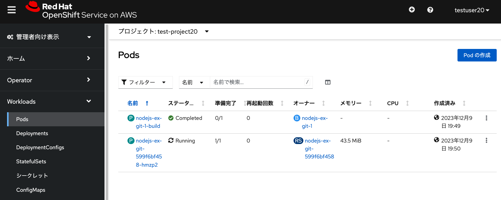

Amazon EBSの利用 演習の概要 このモジュールでは、Amazon EBSを利用した、コンテナアプリのデータ保存を実行します。 永続ボリューム要求(Persistent Volume Claim, PVC)の作成 ROSAには、Amazon Elastic Block Store (EBS) ボリュームを使用するストレージクラスが事前に設定されています。 このため、 Amazon EBSのgp2, gp3ボリュームタイプがすぐ使えるようになっています。 このうち、デフォルトのストレージクラスがgp3として設定されており、 外部ストレージを永続ボリュームとして利用する際のデフォルトとして利用されます。 ここでgp3ストレージクラスを利用するために、新しく永続ボリューム要求(Persistent Volume Claim, PVC)を作成します。 「PersistentVolumeClaimの作成」をクリックして、PVCの名前は、任意の名前(ここではtest-pvc-20)を入力し、 要求するサイズは1GiBと指定します。 PVCはプロジェクトという名前空間の中にあるリソースです。そのため、各プロジェクトにおいて、同じ名前のPVCが存在できます。 例えば、プロジェクト1の中にPVC1、プロジェクト2の中にPVC1を作ることができます。 ただし、1つのプロジェクトの中のリソース名の重複は許可されていないため、この例の場合だと、プロジェクト1の中にPVC1を2つ作ることはできません。 このgp3ストレージクラスは、ボリュームバインディングモードが「WaitForFirstConsumer」と指定されており、 最初にPodから永続ボリューム要求が利用されるまで、永続ボリュームの割り当てが行われない(ステータスがPendingのまま)ようになっています。 なお、ボリュームバインディングモードが「Immediate」となっている場合、PVC作成後すぐに永続ボリュームの割り当てが行われます。 PVCを利用するPodの作成 Podを作成します。「Podの作成」から、次のYAMLファイルを入力してPodを作成します。 下記の「claimName: test-pvc-20」となっているところは、作成したPVCの名前に応じて、適宜変更してください。 PodはKubernetes/OpenShift上でのコンテナアプリの実行単位です。 下記のYAMLファイルにあるとおり、コンテナ(この例ではCentOSコンテナの最新版を利用)や コンテナが利用する永続ボリュームの設定などをまとめたものになります。 Podにはコンテナを複数まとめることもできますが、基本的には1つのPodには1つのコンテナを含むことを推奨しています。 apiVersion: v1 kind: Pod metadata: name: test-ebs spec: volumes: - name: ebs-storage-vol persistentVolumeClaim: claimName: test-pvc-20 containers: - name: test-ebs image: centos:latest command: [ "/bin/bash", "-c", "--" ] args: [ "while true; do touch /mnt/ebs-data/verify-ebs && echo 'hello ebs' && sleep 30; done;" ] volumeMounts: - mountPath: "/mnt/ebs-data" name: ebs-storage-vol securityContext: allowPrivilegeEscalation: false seccompProfile: type: RuntimeDefault  test-ebsという名前でPodが作成されて、Podにより「test-pvc-20」PVCが利用されて、永続ボリュームとして外部ストレージの利用が開始されます。 このPodのログやターミナルから、永続ボリュームのマウント状況や動作状況を確認できます。 ここで上記画像にあるように、Podのターミナルから、echoコマンドなどで永続ボリュームのマウントポイントである /mnt/ebs-data ディレクトリに、適当なファイルを作成します。 Podを削除(該当Podを選択して、「アクション」→「Podの削除」を選択)した後に、 再度「test-pvc-20」PVCを指定してPodを作成すると、作成したテストファイルが残っていることを確認できます。 Amazon EBSを利用したPVCは、1台のワーカーノードでマウントして利用できます。 共有ファイルシステムのように、複数台のワーカーノードでマウントして利用することはできません。 また、 1台のワーカーノードに接続できるEBSのボリュームは39個までとなります。 これはAWSのEBSの制限に起因します。 複数台のワーカーノードで利用する共有ファイルシステム用の永続ボリュームとして、Amazon EFSを利用することもできます。 その場合、Amazon EFSのContainer Storage Interface(CSI. ストレージベンダーが提供するKubernetes用のインタフェース) を利用するために、「AWS EFS CSI Driver Operator」をインストール/設定して利用します。 ROSA HCPクラスターはAWS STSを利用しているため、 Amazon EFSを利用するためのIAMロールとポリシーを作成する必要があります。 詳細については、 公式ドキュメントをご参照ください。